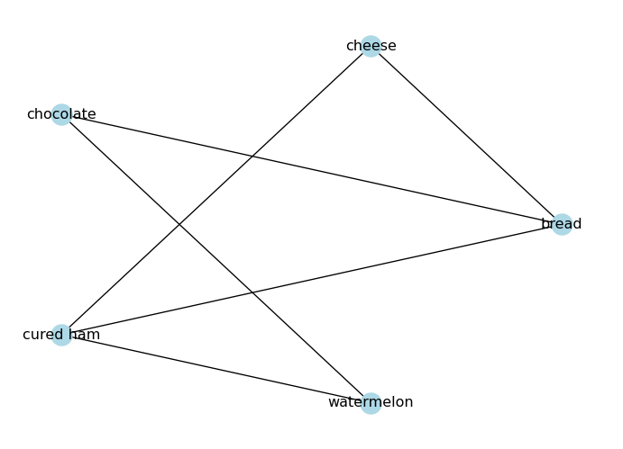
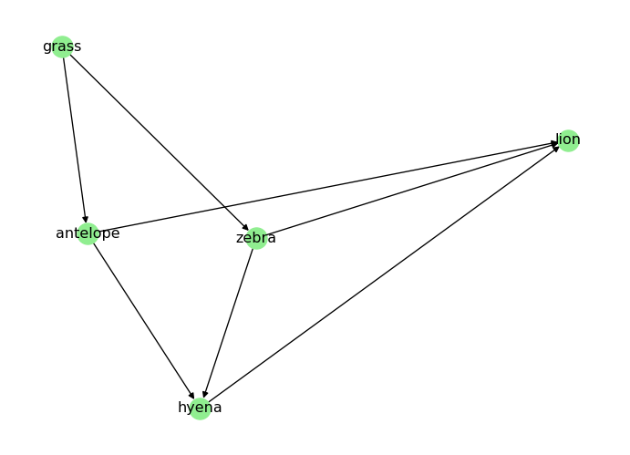

In this page, we will explore some basic properties of networks, such as degree, density, clustering, and paths / connected components(Newman 2018).
If you are coding alongside me, I recommend you to start a new notebook and follow the code snippets below. You can also check the Network Fundamentals page for more details on how to create graphs with networkx.
As always, we should start by importing the necessary libraries and creating a sample graph.
import networkx as nximport matplotlib.pyplot as plt# Create an undirected graph# (foods I like to eat together)G_foods = nx.from_edgelist([ ("bread", "cheese"), ("bread", "chocolate"), ("bread", "cured ham"), ("cheese", "cured ham"), ("chocolate", "cookies"), ("chocolate", "milk"), ("chocolate", "watermelon"), ("cookies", "milk"), ("cured ham", "watermelon"),])# Visualize the graphpos = nx.circular_layout(G_foods)nx.draw(G_foods, node_color="lightblue", with_labels=True, pos=pos)plt.show()
The degree \(k\) of a node is the number of edges connected to it. In an undirected graph, the degree of a node is simply the number of neighbors it has.
# Degree of a nodeprint("Degree of 'bread':", G_foods.degree("bread"))
Degree of 'bread': 3
The average degree of an undirected graph is given by:
\[\langle k \rangle = \frac{2E}{N}\]
where \(E\) is the number of edges and \(N\) is the number of nodes.
# Average degree of the graphls_degrees = [G_foods.degree(node) for node in G_foods.nodes()]avg_degree =sum(ls_degrees) /len(ls_degrees)print("Average degree:", avg_degree)
Average degree: 2.5714285714285716
Degrees in Directed Graphs
In a directed graph, we distinguish between in-degree (number of incoming edges) and out-degree (number of outgoing edges).
print("In-degree of 'antelope' (number of prey):", D_food_chain.in_degree("antelope"))print("Out-degree of 'antelope' (number of predators):", D_food_chain.out_degree("antelope"))
In-degree of 'antelope' (number of prey): 1
Out-degree of 'antelope' (number of predators): 2
Density
A graph density is the ratio of the number of edges to the number of possible edges. It is a measure of how many edges are present in the graph compared to the maximum possible number of edges. The density of an undirected graph can be calculated as follows:
\[
D = \frac{2|E|}{|V|(|V| - 1)}
\]
where \(|E|\) is the number of edges and \(|V|\) is the number of nodes in the graph.
In a directed graph, we have twice as many possible edges (since each pair of nodes can have two directed edges), so the density is calculated as:
\[
D = \frac{|E|}{|V|(|V| - 1)}
\]
NetworkX provides a built-in function to calculate the density of a graph:
# Densityprint("Density:", nx.density(G_foods))
Density: 0.42857142857142855
A graph is sparse when \(D \ll 1\) and dense when \(D \approx 1\). In practice, many real graphs fall in an intermediate range, so density is often better viewed as a spectrum rather than a strict binary label.
# Check if the graph is sparse, intermediate, or denseD = nx.density(G_foods)if D <0.1:print("The graph is sparse.")elif D >0.6:print("The graph is dense.")else:print("The graph has intermediate density.")
The graph has intermediate density.
Clustering Coefficient
Many real networks have triangles: if A is connected to B and C, there is a higher-than-random chance that B is also connected to C (Watts and Strogatz 1998; Newman 2018). This tendency is captured by the clustering coefficient.
For an undirected graph, the local clustering coefficient of node \(i\) is:
\[
C_i = \frac{2T_i}{k_i(k_i - 1)}
\]
where \(k_i\) is the degree of node \(i\), and \(T_i\) is the number of triangles that include node \(i\). If \(k_i < 2\), we define \(C_i = 0\).
In our food graph, \(C_{\text{bread}} = 1/3\): “bread” has three neighbors, and only one neighbor-pair is connected.
The average clustering coefficient is:
\[
C = \frac{1}{N}\sum_{i=1}^N C_i.
\]
In NetworkX:
nx.clustering(G) returns \(C_i\) for every node.
nx.average_clustering(G) returns the average \(C\).
We will use \(C\) later to compare random vs small-world vs scale-free synthetic networks.
# Local clustering coefficient for each nodeclustering = nx.clustering(G_foods)print("Local clustering:")for node, c in clustering.items():print(f" {node}: {c:.3f}")print("Average clustering:", nx.average_clustering(G_foods))# Another common global measure is transitivity# (ratio of triangles to connected triples)print("Transitivity:", nx.transitivity(G_foods))
Connectivity is a fundamental property of graphs that describes how well the nodes are connected to each other. In an undirected graph, a graph is connected if there is a path between any two nodes. If a graph is not connected, it consists of multiple connected components, which are subgraphs in which any two nodes are connected by a path.
Paths in an Undirected Graph
A path in a network is a sequence of edges connecting two nodes.
Take a look at the food graph we created above. Is there a path from “bread” to “watermelon”?
# Draw the graphpos = nx.circular_layout(G_foods)nx.draw(G_foods, node_color="lightblue", with_labels=True, pos=pos)plt.show()

NetworkX provides has_path(<graph>, <node1>, <node2>) to check if there is a path between two nodes:
# Check if there is a path from 'bread' to 'watermelon'print("Is there a path from 'bread' to 'watermelon'?", nx.has_path(G_foods, "bread", "watermelon"))
Is there a path from 'bread' to 'watermelon'? True
There can be more than one path between two nodes. We can use all_simple_paths(<graph>, <node1>, <node2>) to find all the simple paths between two nodes:
ls_paths =list(nx.all_simple_paths(G_foods, "bread", "watermelon"))print("All paths from 'bread' to 'watermelon':", ls_paths)
All paths from 'bread' to 'watermelon': [['bread', 'cheese', 'cured ham', 'watermelon'], ['bread', 'chocolate', 'watermelon'], ['bread', 'cured ham', 'watermelon']]
Connected Components in Undirected Graphs
A connected component is a subgraph in which any two nodes are connected by a path. A graph is connected if it has only one connected component.
How many connected components does G_foods have?
G_foods has one connected component, since all nodes are connected to each other through some path.
The diameter of a graph is the length of the longest shortest path between any two nodes in the graph. It gives us an idea of how “far apart” the nodes are in the graph.
print("Diameter:", nx.diameter(G_foods))
Diameter: 3
The average path length (APL) is the average of the shortest paths between all pairs of nodes.
A higher degree centrality means the node is more “important” in terms of connectivity. In our food graph, “chocolate” has the highest degree centrality, while “bread” and “cured ham” are the next most connected nodes.
Closeness Centrality
Closeness measures how close a node is (on average) to all others via shortest paths (Sabidussi 1966). One common definition is
A higher closeness centrality means the node can reach other nodes more quickly. In our food graph, “chocolate” has the highest closeness centrality, followed by “bread”.
Disconnected graphs
If a graph is disconnected, some distances are infinite and closeness becomes tricky. In practice you often compute path-based metrics on the largest connected component.
Betweenness identifies bridges: nodes that sit on many shortest paths (Freeman 1977). Formally,
\[
\mathrm{between}(v) = \sum_{s \neq v \neq t} \frac{\sigma_{st}(v)}{\sigma_{st}},
\]
where \(\sigma_{st}\) is the number of shortest paths from \(s\) to \(t\), and \(\sigma_{st}(v)\) is the number of those paths that pass through \(v\).
bc = nx.betweenness_centrality(G_foods)print("Betweenness centrality:")for node, c insorted(bc.items(), key=lambda kv: kv[1], reverse=True):print(f" {node}: {c:.3f}")
Higher betweenness centrality means the node acts as a bridge between different parts of the graph. In our food graph, “chocolate” has the highest betweenness centrality, with “bread” as the second most important bridge.
PageRank (Directed Networks)
For directed networks (like the web), PageRank is the stationary distribution of a random walk (“random surfer”) on the graph (Page et al. 1999).
On large graphs, exact betweenness can be expensive. NetworkX supports approximation (sample \(k\) sources):
nx.betweenness_centrality(G, k=200, seed=SEED)
Connectivity in Directed Graphs
Connectivity in directed graphs is more complex than in undirected graphs, because we have to consider the direction of the edges. In a directed graph, we can have strongly connected components and weakly connected components.
Paths in Directed Graphs
In a directed graph, a path must follow the direction of the edges. For example, in the directed food chain graph D, is there a path from “grass” to “lion”?
# Draw the graphpos = nx.spring_layout(D_food_chain)nx.draw(D_food_chain, node_color="lightgreen", with_labels=True, pos=pos)plt.show()

We can check for the existence of a path in a directed graph using the same has_path(<graph>, <node1>, <node2>) function:
print("Is there a path from 'grass' to 'lion'?", nx.has_path(D_food_chain, "grass", "lion")) print("Is there a path from 'lion' to 'grass'?", nx.has_path(D_food_chain, "lion", "grass"))
Is there a path from 'grass' to 'lion'? True
Is there a path from 'lion' to 'grass'? False
Strongly Connected Components
A strongly connected component is a subgraph in which there is a directed path from any node to any other node. A directed graph is strongly connected if it has only one strongly connected component.
A weakly connected component is a subgraph in which there is an undirected path from any node to any other node. A directed graph is weakly connected if it has only one weakly connected component.
Exercise. How can we turn D_food_chain into a strongly connected graph? Try adding some edges to make it strongly connected.
Solution
To make D_food_chain strongly connected, we need to ensure that there is a directed path from every node to every other node. One way to achieve this is to add edges that create cycles between the nodes. Our example is a though one, as food chains are typically acyclic. Still, we can take note from “The Lion King”:
“When we die, our bodies become the grass, and the antelope eat the grass. And so, we are all connected in the great Circle of Life.” - Mufasa (lion)
# When a predator dies, it returns to the food chain as prey for the grassD_food_chain.add_edges_from([ ("lion", "grass"),])# Visualize the new graphpos = nx.spring_layout(D_food_chain)nx.draw(D_food_chain, node_color="lightgreen", with_labels=True, pos=pos)plt.show()
Diameter and Average Path Length in Directed Graphs
The diameter and average path length in directed graphs are calculated based on the shortest paths that follow the direction of the edges. If the graph is not strongly connected, we can only calculate these metrics for the largest strongly connected component.
# Get the largest strongly connected componentlargest_scc =max(nx.strongly_connected_components(D_food_chain), key=len)subgraph = D_food_chain.subgraph(largest_scc)print("Diameter of the largest strongly connected component:", nx.diameter(subgraph))print("Average shortest path length of the largest strongly connected component:", nx.average_shortest_path_length(subgraph))
Diameter of the largest strongly connected component: 3
Average shortest path length of the largest strongly connected component: 1.85
What’s Next?
In the next page, we will learn how to generate synthetic graphs (random, small-world, scale-free) and compare their properties.
Freeman, Linton C. 1977. “A Set of Measures of Centrality Based on Betweenness.”Sociometry 40 (1): 35–41. https://doi.org/10.2307/3033543.
Newman, Mark. 2018. Networks. 2nd ed. Oxford University Press.
Page, Lawrence, Sergey Brin, Rajeev Motwani, and Terry Winograd. 1999. “The PageRank Citation Ranking: Bringing Order to the Web.” 1999-66. Stanford InfoLab. http://ilpubs.stanford.edu:8090/422/.
Watts, Duncan J., and Steven H. Strogatz. 1998. “Collective Dynamics of ’Small-World’ Networks.”Nature 393 (6684): 440–42. https://doi.org/10.1038/30918.
Source Code
---title: "Networks: Connectivity"subtitle: "Paths, Degree, Connected Components"format: html---In this page, we will explore some basic properties of networks, such as **degree**, **density**, **clustering**, and **paths / connected components** [@newman2018networks].If you are coding alongside me, I recommend you to start a new notebook and follow the code snippets below. You can also check the [Network Fundamentals](fundamentals.qmd) page for more details on how to create graphs with `networkx`.As always, we should start by importing the necessary libraries and creating a sample graph.```{python}import networkx as nximport matplotlib.pyplot as plt# Create an undirected graph# (foods I like to eat together)G_foods = nx.from_edgelist([ ("bread", "cheese"), ("bread", "chocolate"), ("bread", "cured ham"), ("cheese", "cured ham"), ("chocolate", "cookies"), ("chocolate", "milk"), ("chocolate", "watermelon"), ("cookies", "milk"), ("cured ham", "watermelon"),])# Visualize the graphpos = nx.circular_layout(G_foods)nx.draw(G_foods, node_color="lightblue", with_labels=True, pos=pos)plt.show()``````{python}# Create a directed graphD_food_chain = nx.DiGraph() # food chain (prey -> predator)D_food_chain.add_edges_from([ ("grass", "antelope"), ("grass", "zebra"), ("antelope", "lion"), ("antelope", "hyena"), ("zebra", "lion"), ("zebra", "hyena"), ("hyena", "lion"),])# Visualize the graphpos = nx.spring_layout(D_food_chain)nx.draw(D_food_chain, node_color="lightgreen", with_labels=True, pos=pos)plt.show()```## DegreeThe degree $k$ of a node is the number of edges connected to it. In an undirected graph, the degree of a node is simply the number of neighbors it has.```{python}# Degree of a nodeprint("Degree of 'bread':", G_foods.degree("bread"))```The average degree of an undirected graph is given by:$$\langle k \rangle = \frac{2E}{N}$$where $E$ is the number of edges and $N$ is the number of nodes.```{python}# Average degree of the graphls_degrees = [G_foods.degree(node) for node in G_foods.nodes()]avg_degree =sum(ls_degrees) /len(ls_degrees)print("Average degree:", avg_degree)```### Degrees in Directed GraphsIn a directed graph, we distinguish between in-degree (number of incoming edges) and out-degree (number of outgoing edges).```{python}print("In-degree of 'antelope' (number of prey):", D_food_chain.in_degree("antelope"))print("Out-degree of 'antelope' (number of predators):", D_food_chain.out_degree("antelope"))```## DensityA graph density is the ratio of the number of edges to the number of possible edges. It is a measure of how many edges are present in the graph compared to the maximum possible number of edges. The density of an undirected graph can be calculated as follows:$$D = \frac{2|E|}{|V|(|V| - 1)}$$where $|E|$ is the number of edges and $|V|$ is the number of nodes in the graph.In a directed graph, we have twice as many possible edges (since each pair of nodes can have two directed edges), so the density is calculated as:$$D = \frac{|E|}{|V|(|V| - 1)}$$NetworkX provides a built-in function to calculate the density of a graph:```{python}# Densityprint("Density:", nx.density(G_foods))```A graph is **sparse** when $D \ll 1$ and **dense** when $D \approx 1$.In practice, many real graphs fall in an intermediate range, so density is often better viewed as a spectrum rather than a strict binary label.```{python}# Check if the graph is sparse, intermediate, or denseD = nx.density(G_foods)if D <0.1:print("The graph is sparse.")elif D >0.6:print("The graph is dense.")else:print("The graph has intermediate density.")```## Clustering CoefficientMany real networks have **triangles**: if A is connected to B and C, there is a higher-than-random chance that B is also connected to C [@watts1998collective; @newman2018networks].This tendency is captured by the **clustering coefficient**.For an undirected graph, the *local clustering coefficient* of node $i$ is:$$C_i = \frac{2T_i}{k_i(k_i - 1)}$$where $k_i$ is the degree of node $i$, and $T_i$ is the number of triangles that include node $i$.If $k_i < 2$, we define $C_i = 0$.In our food graph, $C_{\text{bread}} = 1/3$: "bread" has three neighbors, and only one neighbor-pair is connected.The **average clustering coefficient** is:$$C = \frac{1}{N}\sum_{i=1}^N C_i.$$In NetworkX:- `nx.clustering(G)` returns $C_i$ for every node.- `nx.average_clustering(G)` returns the average $C$.We will use $C$ later to compare **random** vs **small-world** vs **scale-free** synthetic networks.```{python}# Local clustering coefficient for each nodeclustering = nx.clustering(G_foods)print("Local clustering:")for node, c in clustering.items():print(f" {node}: {c:.3f}")print("Average clustering:", nx.average_clustering(G_foods))# Another common global measure is transitivity# (ratio of triangles to connected triples)print("Transitivity:", nx.transitivity(G_foods))```## Connectivity in Undirected GraphsConnectivity is a fundamental property of graphs that describes how well the nodes are connected to each other. In an undirected graph, a graph is **connected** if there is a path between any two nodes. If a graph is not connected, it consists of multiple **connected components**, which are subgraphs in which any two nodes are connected by a path.### Paths in an Undirected GraphA **path** in a network is a sequence of edges connecting two nodes.Take a look at the food graph we created above. Is there a path from "bread" to "watermelon"?```{python}# Draw the graphpos = nx.circular_layout(G_foods)nx.draw(G_foods, node_color="lightblue", with_labels=True, pos=pos)plt.show()```NetworkX provides `has_path(<graph>, <node1>, <node2>)` to check if there is a path between two nodes:```{python}# Check if there is a path from 'bread' to 'watermelon'print("Is there a path from 'bread' to 'watermelon'?", nx.has_path(G_foods, "bread", "watermelon"))```There can be more than one path between two nodes. We can use `all_simple_paths(<graph>, <node1>, <node2>)` to find all the simple paths between two nodes:```{python}ls_paths =list(nx.all_simple_paths(G_foods, "bread", "watermelon"))print("All paths from 'bread' to 'watermelon':", ls_paths)```### Connected Components in Undirected GraphsA **connected component** is a subgraph in which any two nodes are connected by a path. A graph is **connected** if it has only one connected component.::: {.callout-tip collapse="true"}## How many connected components does `G_foods` have?`G_foods` has one connected component, since all nodes are connected to each other through some path.As usual, we can verify this with NetworkX:```{python}print("Connected components:", list(nx.connected_components(G_foods)))```:::### Diameter and Average Path LengthThe **diameter** of a graph is the length of the longest shortest path between any two nodes in the graph. It gives us an idea of how "far apart" the nodes are in the graph.```{python}print("Diameter:", nx.diameter(G_foods))```The **average path length (APL)** is the average of the shortest paths between all pairs of nodes.```{python}print("Average shortest path length:", nx.average_shortest_path_length(G_foods))```## Centrality (Node Importance)In many real networks, not all nodes play the same role:- in an airport network, some airports are **hubs**;- in an email network, some people act as **bridges** between groups.These ideas are quantified by **centrality measures** [@newman2018networks].### Degree CentralityThe simplest centrality is based on degree. In an undirected graph with $N$ nodes, the (normalized) degree centrality is [@newman2018networks]$$\mathrm{deg\_cent}(i) = \frac{k_i}{N-1}.$$```{python}deg_cent = nx.degree_centrality(G_foods)print("Degree centrality:")for node, c insorted(deg_cent.items(), key=lambda kv: kv[1], reverse=True):print(f" {node}: {c:.3f}")```A higher degree centrality means the node is more "important" in terms of connectivity. In our food graph, "chocolate" has the highest degree centrality, while "bread" and "cured ham" are the next most connected nodes.### Closeness CentralityCloseness measures how close a node is (on average) to all others via shortest paths [@sabidussi1966centrality].One common definition is$$\mathrm{close}(i) = \frac{N-1}{\sum_{j \neq i} d(i,j)},$$where $d(i,j)$ is the shortest-path distance.A higher closeness centrality means the node can reach other nodes more quickly. In our food graph, "chocolate" has the highest closeness centrality, followed by "bread".::: {.callout-note}## Disconnected graphsIf a graph is disconnected, some distances are infinite and closeness becomes tricky. In practice you often compute path-based metrics on the **largest connected component**.:::```{python}close_cent = nx.closeness_centrality(G_foods)print("Closeness centrality:")for node, c insorted(close_cent.items(), key=lambda kv: kv[1], reverse=True):print(f" {node}: {c:.3f}")```### Betweenness CentralityBetweenness identifies **bridges**: nodes that sit on many shortest paths [@freeman1977betweenness].Formally,$$\mathrm{between}(v) = \sum_{s \neq v \neq t} \frac{\sigma_{st}(v)}{\sigma_{st}},$$where $\sigma_{st}$ is the number of shortest paths from $s$ to $t$, and $\sigma_{st}(v)$ is the number of those paths that pass through $v$.```{python}bc = nx.betweenness_centrality(G_foods)print("Betweenness centrality:")for node, c insorted(bc.items(), key=lambda kv: kv[1], reverse=True):print(f" {node}: {c:.3f}")```Higher betweenness centrality means the node acts as a bridge between different parts of the graph. In our food graph, "chocolate" has the highest betweenness centrality, with "bread" as the second most important bridge.### PageRank (Directed Networks)For directed networks (like the web), PageRank is the stationary distribution of a random walk ("random surfer") on the graph [@page1999pagerank].```{python}pr = nx.pagerank(D_food_chain, alpha=0.85)print("PageRank (directed food chain):")for node, c insorted(pr.items(), key=lambda kv: kv[1], reverse=True):print(f" {node}: {c:.3f}")```::: {.callout-tip collapse="true"}## Performance noteOn large graphs, exact betweenness can be expensive. NetworkX supports approximation (sample $k$ sources):```pythonnx.betweenness_centrality(G, k=200, seed=SEED)```:::## Connectivity in Directed GraphsConnectivity in directed graphs is more complex than in undirected graphs, because we have to consider the direction of the edges. In a directed graph, we can have **strongly connected components** and **weakly connected components**.### Paths in Directed GraphsIn a directed graph, a path must follow the direction of the edges. For example, in the directed food chain graph `D`, is there a path from "grass" to "lion"?```{python}# Draw the graphpos = nx.spring_layout(D_food_chain)nx.draw(D_food_chain, node_color="lightgreen", with_labels=True, pos=pos)plt.show()```We can check for the existence of a path in a directed graph using the same `has_path(<graph>, <node1>, <node2>)` function:```{python}print("Is there a path from 'grass' to 'lion'?", nx.has_path(D_food_chain, "grass", "lion")) print("Is there a path from 'lion' to 'grass'?", nx.has_path(D_food_chain, "lion", "grass"))```### Strongly Connected ComponentsA strongly connected component is a subgraph in which there is a directed path from any node to any other node. A directed graph is strongly connected if it has only one strongly connected component.```{python}print("Is strongly connected:", nx.is_strongly_connected(D_food_chain))print("Strongly connected components:", list(nx.strongly_connected_components(D_food_chain)))```### Weakly Connected ComponentsA weakly connected component is a subgraph in which there is an undirected path from any node to any other node. A directed graph is weakly connected if it has only one weakly connected component.```{python}print("Is weakly connected:", nx.is_weakly_connected(D_food_chain))print("Weakly connected components:", list(nx.weakly_connected_components(D_food_chain)))```**Exercise.** How can we turn `D_food_chain` into a strongly connected graph? Try adding some edges to make it strongly connected.::: {.callout-tip collapse="true"}## SolutionTo make `D_food_chain` strongly connected, we need to ensure that there is a directed path from every node to every other node. One way to achieve this is to add edges that create cycles between the nodes. Our example is a though one, as food chains are typically acyclic. Still, we can take note from "The Lion King":> "When we die, our bodies become the grass, and the antelope eat the grass. And so, we are all connected in the great Circle of Life." - Mufasa (lion)```{python}# When a predator dies, it returns to the food chain as prey for the grassD_food_chain.add_edges_from([ ("lion", "grass"),])# Visualize the new graphpos = nx.spring_layout(D_food_chain)nx.draw(D_food_chain, node_color="lightgreen", with_labels=True, pos=pos)plt.show()``````{python}print("Is strongly connected:", nx.is_strongly_connected(D_food_chain))print("Strongly connected components:", list(nx.strongly_connected_components(D_food_chain)))```:::### Diameter and Average Path Length in Directed GraphsThe diameter and average path length in directed graphs are calculated based on the shortest paths that follow the direction of the edges. If the graph is not strongly connected, we can only calculate these metrics for the largest strongly connected component.```{python}# Get the largest strongly connected componentlargest_scc =max(nx.strongly_connected_components(D_food_chain), key=len)subgraph = D_food_chain.subgraph(largest_scc)print("Diameter of the largest strongly connected component:", nx.diameter(subgraph))print("Average shortest path length of the largest strongly connected component:", nx.average_shortest_path_length(subgraph))```## What's Next?In the next page, we will learn how to generate *synthetic* graphs (random, small-world, scale-free) and compare their properties.[Graph Models](models.qmd){.btn .btn-primary}